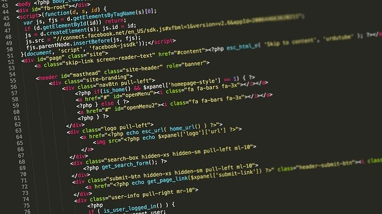

하이퍼링크 만들기
프로그램이란?|
언어 종류|
언어 번역 종류
프로그램 언어

프로그램이란?
프로그램 언어란 컴퓨터에게 명령을 주기 위해 사용하는 언어를 말한다.
프로그램 언어도 매우 많은 종류가 있다.
프로그램 언어는 실행하기 위해 컴퓨터의 언어로 번역이 되야한다.

언어종류
- C
- Python
- Java
- HTML
- VB
언어 번역 종류
- 컴파일러
컴파일러(compiler)는 특정 프로그래밍 언어로 쓰여 있는 문서를 다른 프로그래밍 언어로 옮기는 프로그램을 말한다. 원래의 문서를 소스 코드 혹은 원시 코드라고 부르고, 출력된 문서를 목적 코드라고 부른다.
- 인터프리터
인터프리터(interpreter, 문화어: 해석기)는 프로그래밍 언어의 소스 코드를 바로 실행하는 컴퓨터 프로그램 또는 환경을 말한다. 원시 코드를 기계어로 번역하는 컴파일러와 대비된다. 인터프리터는 다음의 과정 가운데 적어도 한 가지 기능을 가진 프로그램이다.
프로그램이란?|
언어 종류|
언어 번역 종류